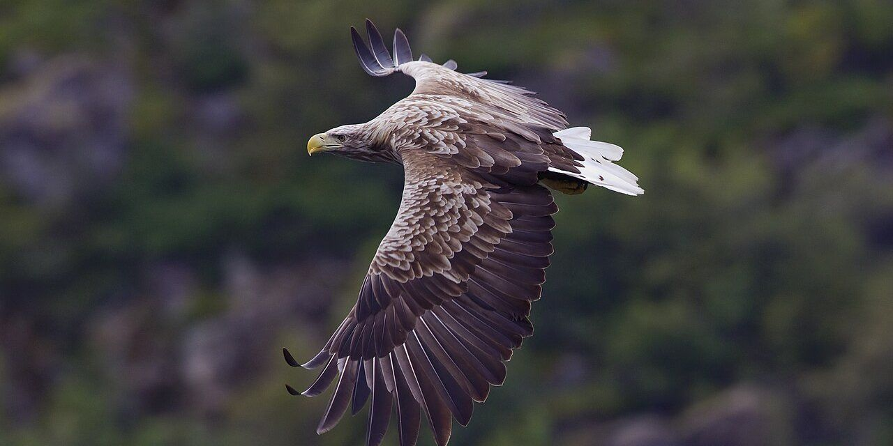

Hvad vil du øve dig på?
Sværhedsgrad
Tip: Brug tastaturgenveje 1-4 for at svare og Enter for at gå videre.
Spørgsmål 1/10
Siddende
Vidste du
Runden er slut
0 points
0rigtige af 10
0bedste streak
De 18 dagrovfugle
Gruppér efter: